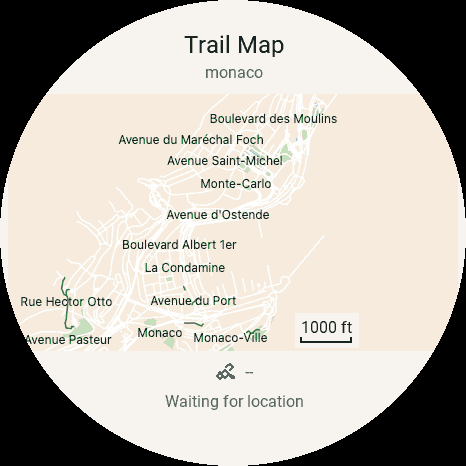
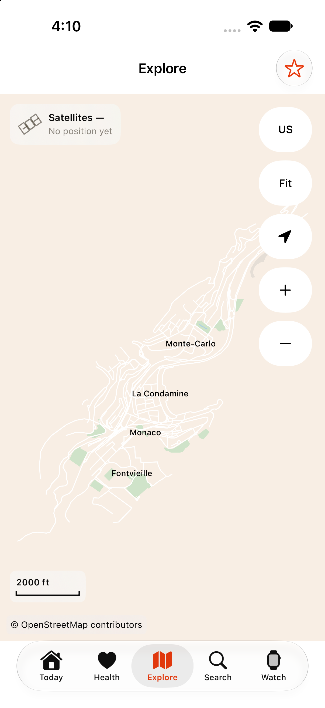
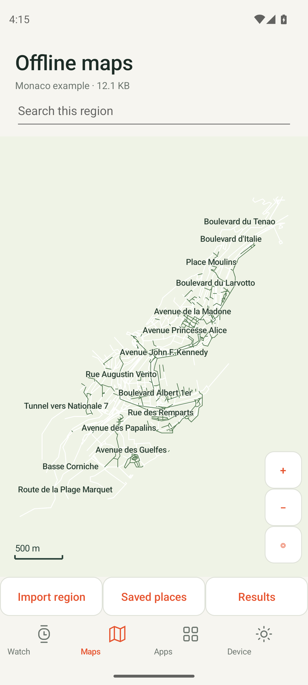

WATCH PRO 2 · OPEN SOURCE
Make room
for your apps.
A native Rust SDK and app loader for the CMF Watch Pro 2. Build an app, try it in the simulator, then install it into its own slot.
JX402 / D398 · Stock 1.0.0.73
Other watch models and firmware versions are unsupported.

01 / THE APPS
Four apps. One SDK.
Drawing, touch, crown input, messages and atomic storage are available to every app.
CONTROL PREVIEW
A region you choose.
Build from an OSM XML or PBF extract, import the result into a companion, then download it to the watch. This capture uses historical Monaco data.
The controls below run locally in your browser. They demonstrate the interaction, not the ARM runtime or a Bluetooth connection.
02 / THE COMPANIONS
Manage it from your phone.
Pair, read supported health and device settings, manage app packages and transfer offline regions with acknowledged progress.


Keep the data offline.
Search an imported region, see up to 300 results, save places and exchange point bookmarks with Organic Maps.
Watch maps use a spatial index and resumable transfers. A replacement is verified before the active file is replaced.
Android APK ↗Build iOS or Android ↗These are simulator captures. Android physical BLE verification is pending. The companions do not yet reproduce every vendor service; see the feature matrix.
03 / BUILD SOMETHING ELSE
Start with a small app.
Keep building.
Fork an example, add its crate to the workspace, test input and lifecycle behavior, then package it as .wp2app. Eight independent slots keep ordinary app updates separate from the first stock firmware patch.
First-time firmware patching can make a watch unusable. Physical recovery is not universally verified. Native apps are not a security sandbox; review code before installing it.